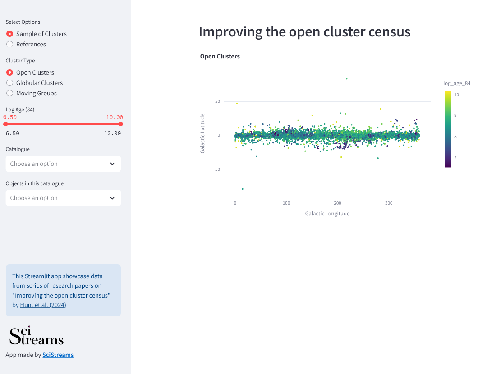
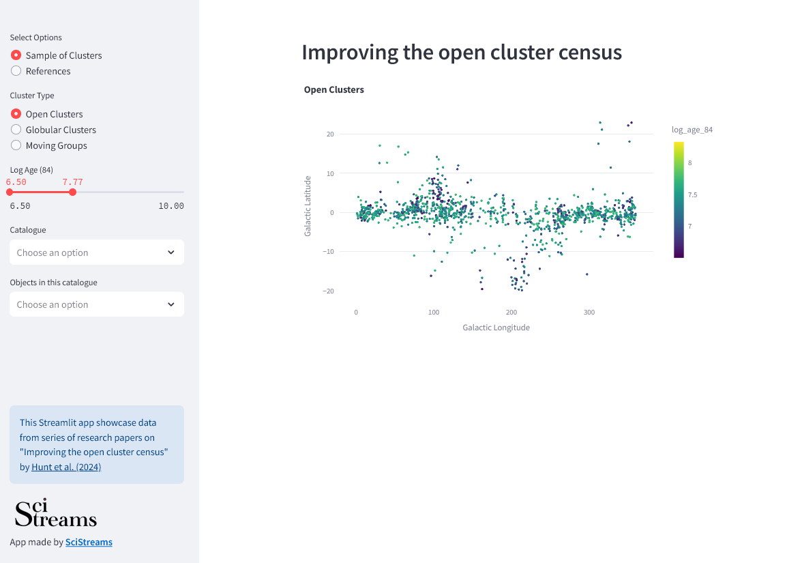
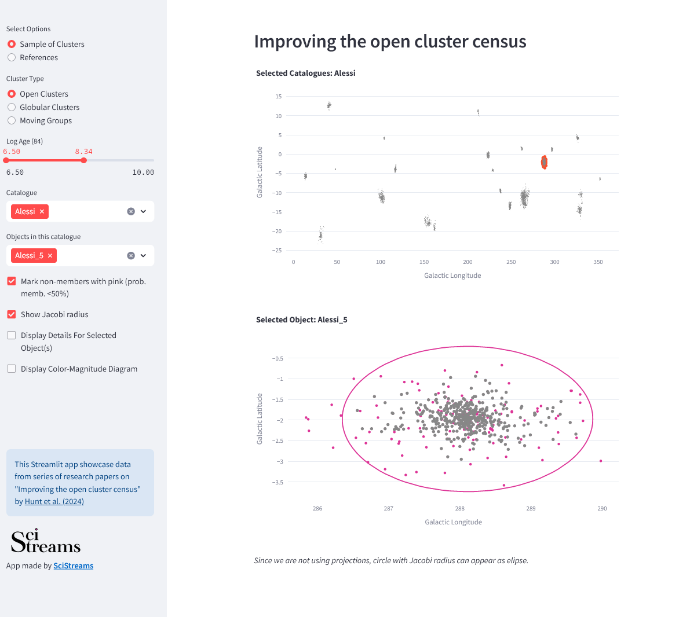
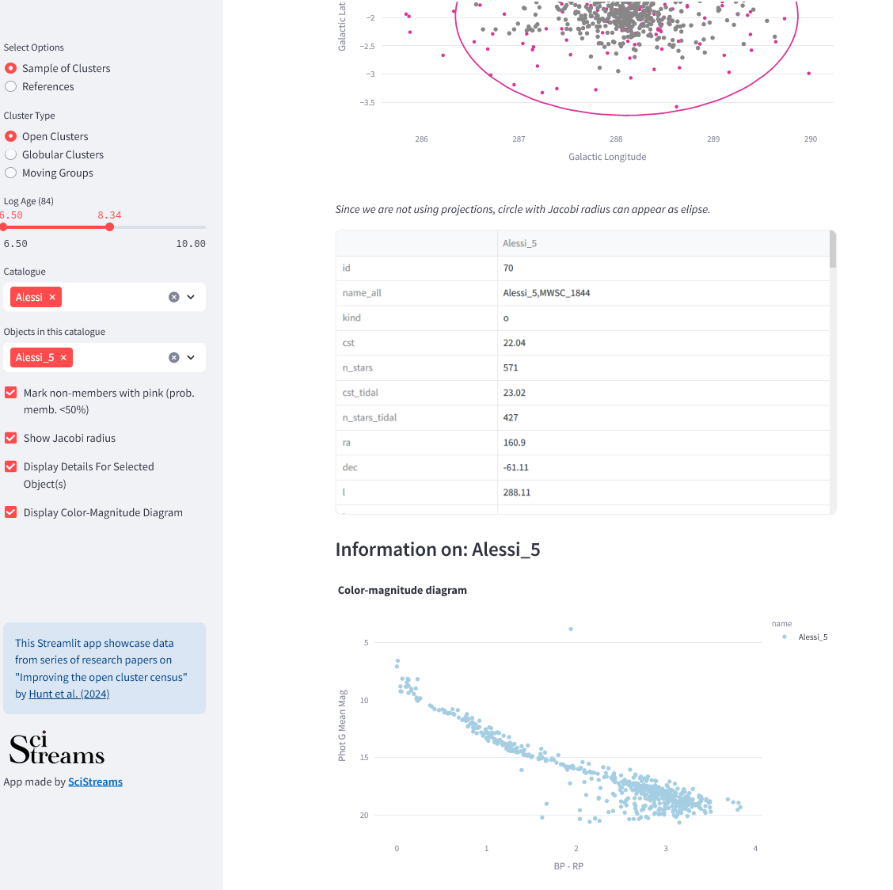
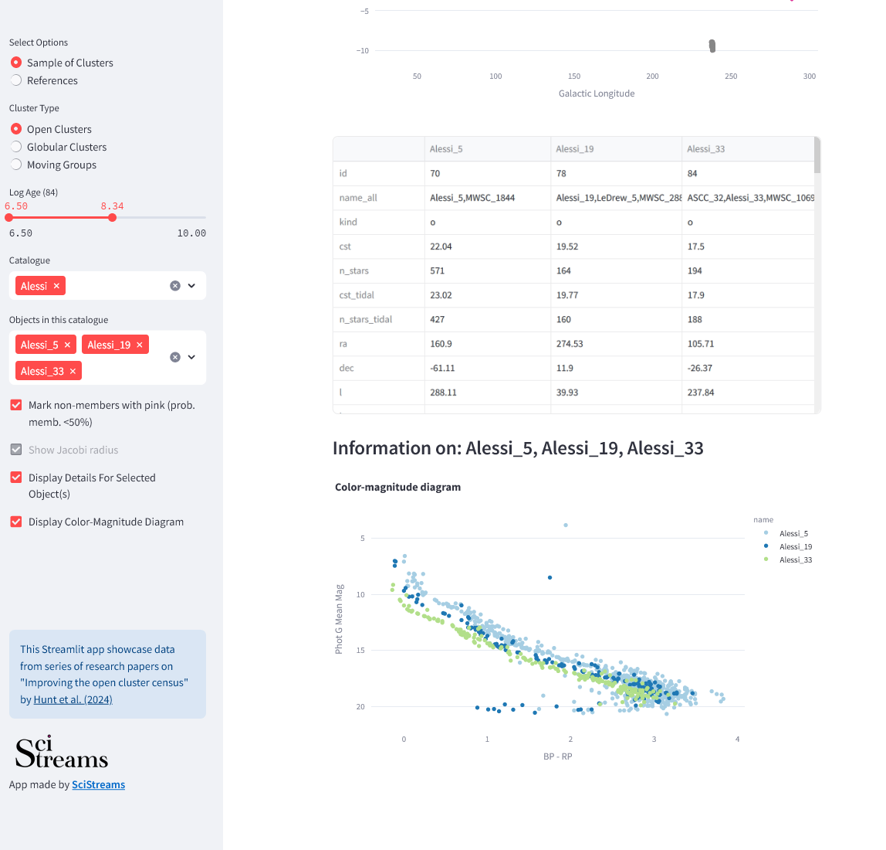

Improving the open cluster census
Dataset by Hunt et al. 2024
This Streamlit app showcase a datasets of clusters and moving objects by Hunt et al. 2024. Through a series of research papers they conducted the largest search for open clusters to date, and produced a single homogeneous star cluster catalogue. For their research they used data from Gaia DR3.
Improving the open cluster census App
Below we present Improving the open cluster census App, where you can interactively explore parts of the dataset by Hunt et al. 2024 research.
With this app, you can interactively explore catalogue through main classifications: open clusters, globular clusters and moving groups. When selecting initial group, you get a display of objects positions with their Age on the colorscale.
Besides switching to the other objects, one can interact with the Age slider and re-sample clusters based on it.
Further, one can select individual catalogues and individual objects from that catalogue. Once the individual object is selected (like "Alessi_5" fom "Alessi"), cluster members will be displayed and on the catalogue plot - this particular cluster will be highlighted in red.
Additional display enables you to choose whether you want to display Jacobi radius on the selected cluster, and whether you want to highlight probable non-members (based on the probability criteria which is set to 50%).
Additional display options that exists are:
Table with Cluster properties & Color-Magnitude diagram
It is also possible to display multiple clusters at the same time and see their information in table and on Color-Magnitude diagram.
